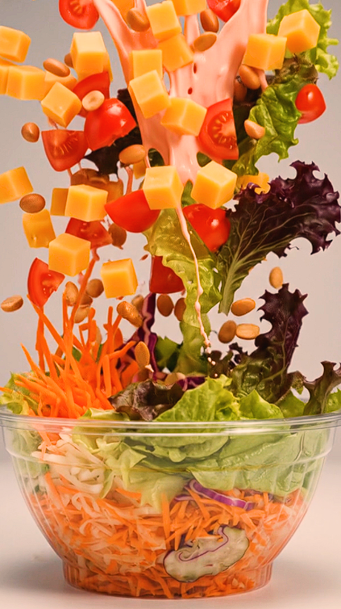
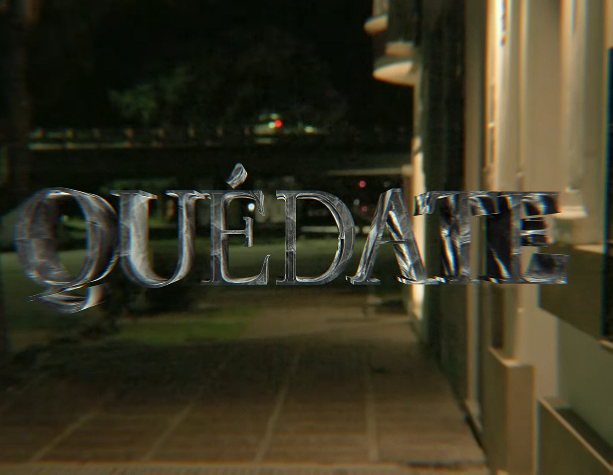
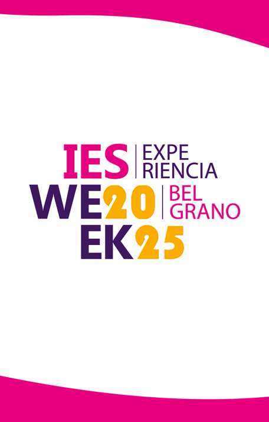
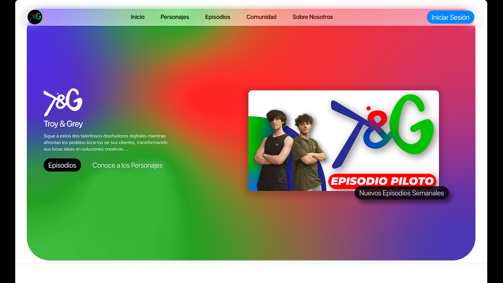

Mis Proyectos

La Manzana Loca
Content & WebCreación de contenido, manejo de cuenta de Instagram y desarrollo de infraestructura e-commerce integral.
Ver Perfil
Videoclips "Pinto"
FilmmakingEdición, dirección y toma de fotos/videos para diversos videoclips del artista (ej. "QUÉDATE").
Ver en YouTube
IES WEEK 2025
Motion GraphicsAnimaciones y motion graphics para el evento en la Estación Belgrano de Santa Fe.
Ver Animación
T&G Manual de Marca
BrandingCreación de logotipo y manual de marca detallado como proyecto final de carrera.
Ver Manual
T&G UX/UI Web
UX / UIDiseño de interfaz y experiencia de usuario con prototipo funcional en Figma.
Ver Prototipo
Desfile Cambalache
FotografíaCobertura fotográfica profesional para la edición 2025 del Desfile Cambalache.
Ver Fotos